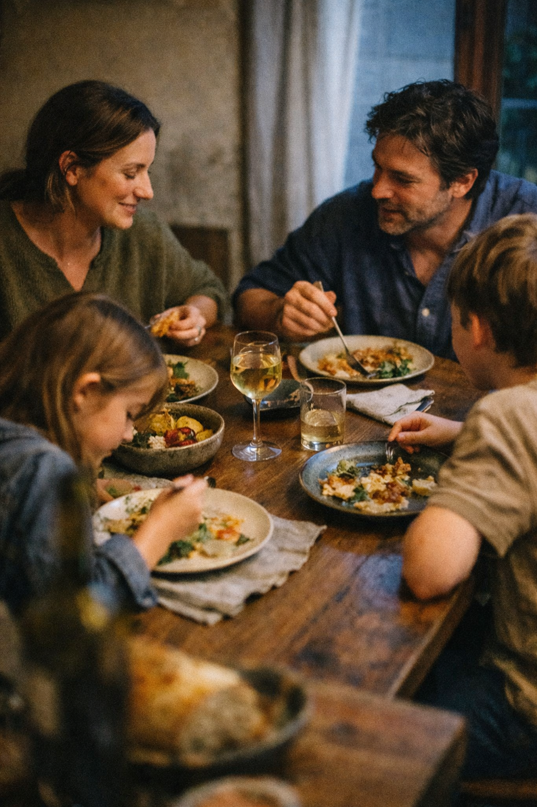

Four small tools, each doing one job well — and one quiet AI layer making them all work together.
Pull recipes from anywhere, store them in one place, and cook from a phone that won't go to sleep on you.
Drag, drop, copy weeks, mark days off. The planner respects your real life — including the nights you're not cooking at all.
Every recipe in your plan turns into one merged, deduplicated, aisle-sorted list. Bring the trolley.
No chatbots, no avatars, no "compose with AI." Just a few small acts of automation, where they actually matter.
Paste any URL. The parser pulls out title, ingredients, method, photo, and timing — even from blogs that bury the recipe under 2,000 words about a Tuscan trip.
Three recipes need lemon — you get one entry on your list. The math handles fractions, mixed units, and "to taste" gracefully.
Mixed metric and imperial? Cups and grams? FamilyTable picks a sensible standard for each ingredient and shows the maths so you trust it.
Save a week you liked. Reuse it next month. The shopping list regenerates with the same merging logic — zero re-keying.
"High-protein week" or "use what's in the fridge" — generate a starting plan you can edit, instead of staring at an empty calendar.
Out of buttermilk? FamilyTable suggests a swap that uses what you've already got, with the right ratios.
FamilyTable lives in the awkward gap between Notion-overkill and "just text yourself the list."
